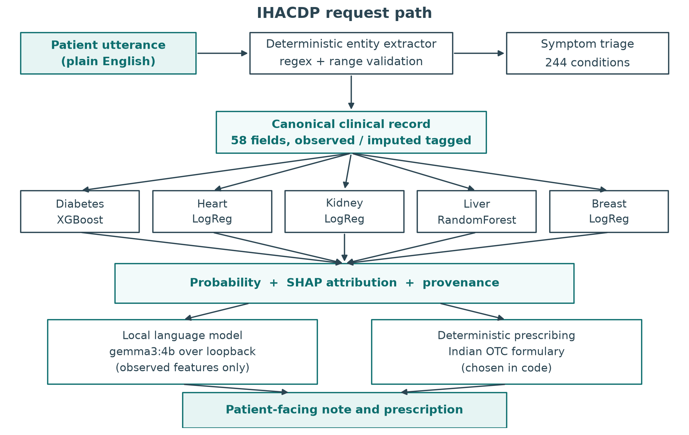
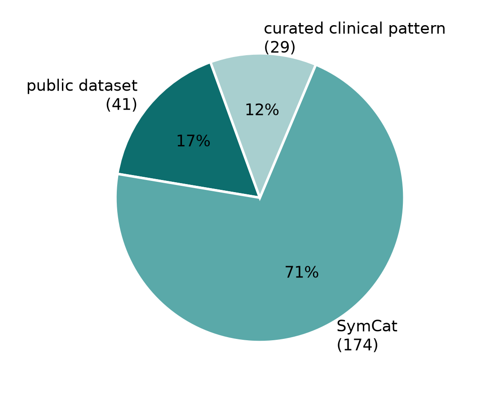
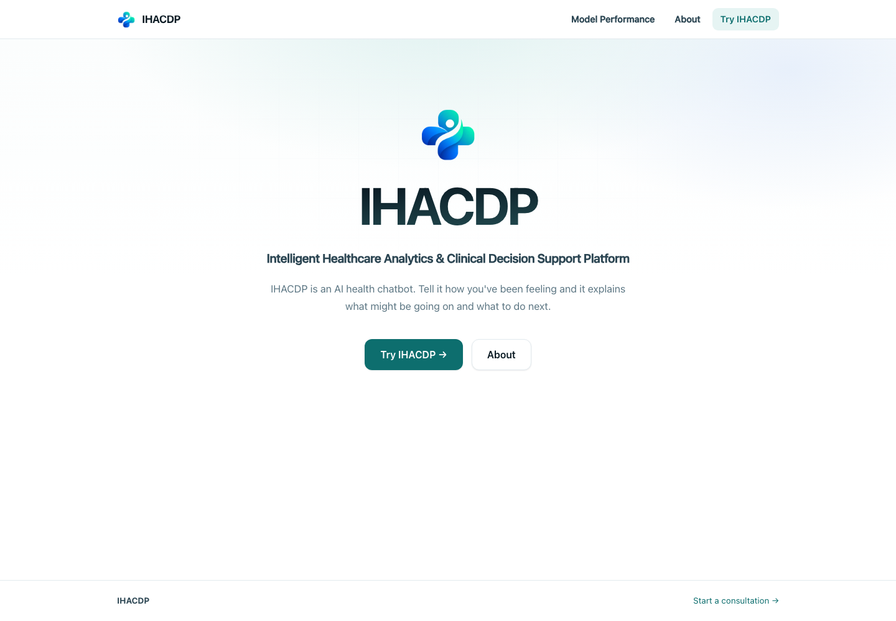
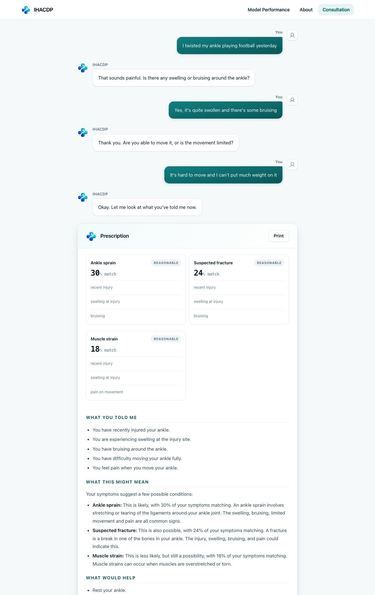
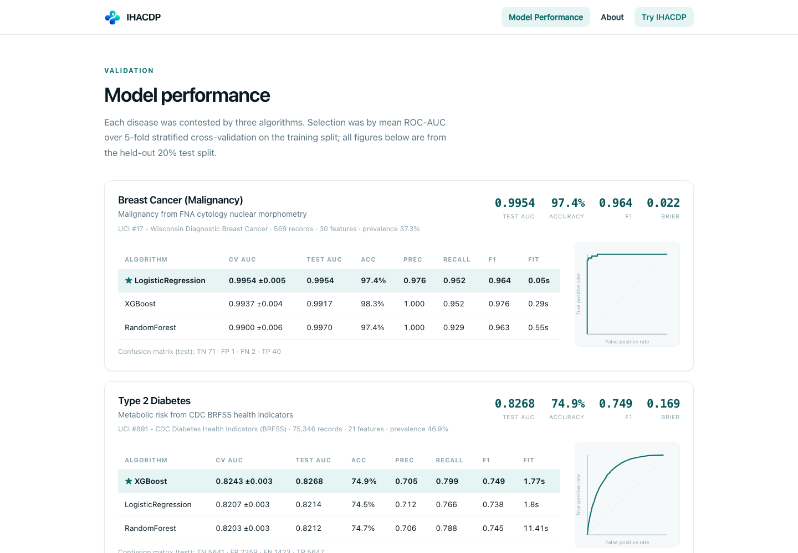
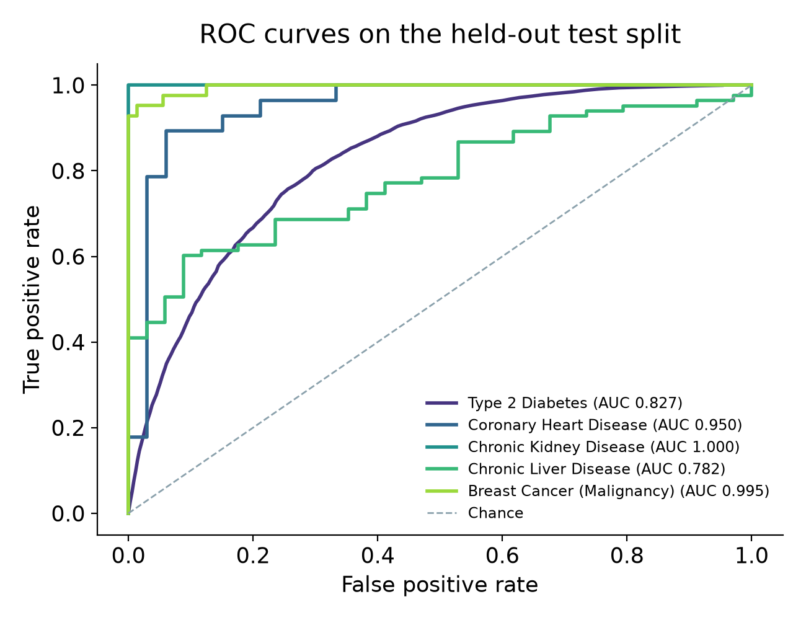
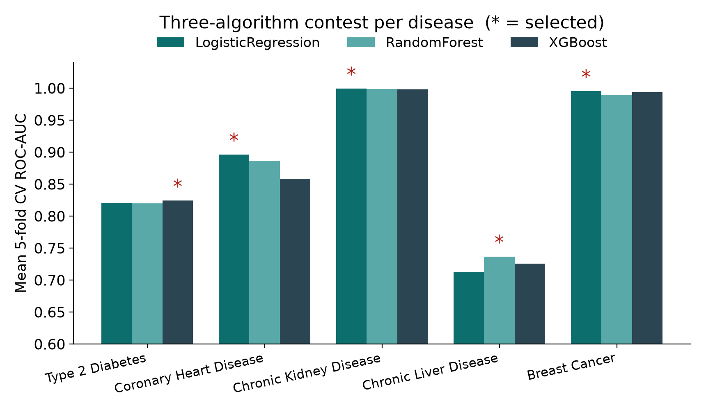
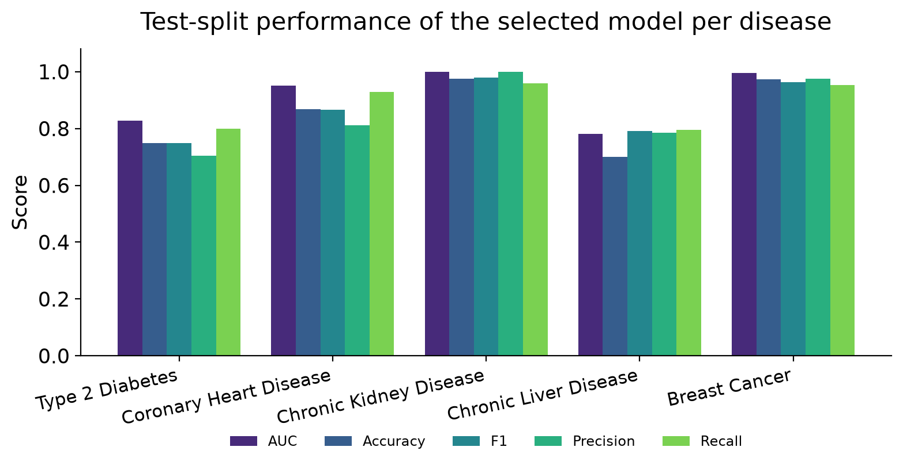
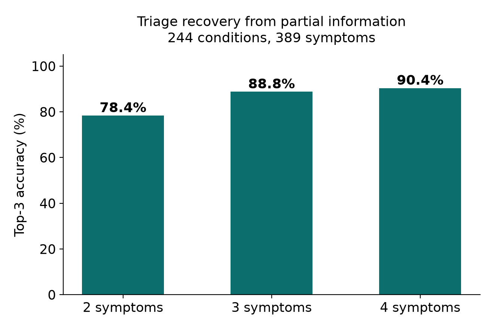
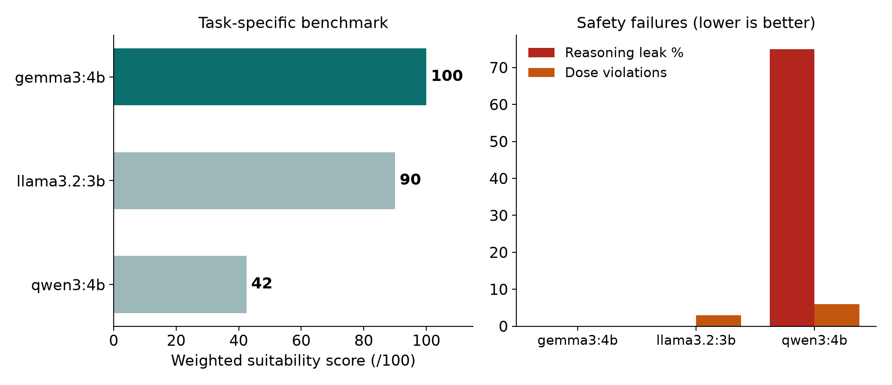

We hereby declare that the thesis entitled “Intelligent Healthcare Analytics And Clinical Decision Support Platform” submitted by SHIVA CHARAN AMBATI (23BRS1203), ATLA ABHINAV KARTHIK REDDY (23BCE1085), KOTHA RITHVIK REDDY (23BCE1582), for the award of the degree of Bachelor of Technology in Computer Science and Engineering, Vellore Institute of Technology, Chennai is a record of bonafide work carried out by us under the supervision of Dr. Vivekanandan M.
We further declare that the work reported in this thesis has not been submitted and will not be submitted, either in part or in full, for the award of any other degree or diploma in this institute or any other institute or university.
Place: Chennai
Date:
Signature of the Candidates
This is to certify that the report entitled “Intelligent Healthcare Analytics And Clinical Decision Support Platform” is prepared and submitted by SHIVA CHARAN AMBATI (23BRS1203), ATLA ABHINAV KARTHIK REDDY (23BCE1085), KOTHA RITHVIK REDDY (23BCE1582) to Vellore Institute of Technology, Chennai, in partial fulfillment of the requirement for the award of the degree of Bachelor of Technology in Computer Science and Engineering is a bonafide record carried out under my guidance. The project fulfills the requirements as per the regulations of this University and in my opinion meets the necessary standards for submission. The contents of this report have not been submitted and will not be submitted either in part or in full, for the award of any other degree or diploma and the same is certified.
Signature of the Guide:
Name: Dr. Vivekanandan M (53646)
Date:
Signature of the Examiner
Name:
Date:
Signature of the Examiner
Name:
Date:
Primary healthcare in India is constrained by a severe shortage of physicians, and a large proportion of the population self-medicates for everyday complaints without any structured assessment. Digital symptom checkers have been proposed to fill this gap, but the current generation divides into two unsatisfactory classes. Systems built on large language models produce fluent and confident clinical text with no measurable error rate and a documented tendency to fabricate findings, while systems built on supervised classifiers can predict a risk but cannot explain the reasoning behind it in a form a patient understands.
This project presents IHACDP, an Intelligent Healthcare Analytics and Clinical Decision Support Platform that resolves this tension by separating the two roles entirely. Statistical models decide; the language model narrates. A deterministic, range-validated entity extractor lifts vitals and laboratory values out of ordinary sentences, so no numeric value is paraphrased by a neural network before it reaches a classifier. Five supervised risk models, each selected from a contest between Logistic Regression, Random Forest and XGBoost by mean five-fold cross-validated ROC-AUC, assess diabetes, coronary heart disease, chronic kidney disease, chronic liver disease and breast malignancy, achieving test-split AUCs of 0.827, 0.950, 1.000, 0.782 and 0.995 respectively. A separate symptom triage layer covers 244 everyday conditions across 389 symptoms, merged from a public symptom matrix, the SymCat knowledge base and a set of curated clinical patterns covering injuries and musculoskeletal complaints that no public dataset carries. Ranking is by inverse-document-frequency weighted overlap rather than by a fitted classifier, because a naive Bayes fit treats every unmentioned symptom as confirmed absent and collapses onto whichever condition has the fewest symptoms. The shipped scorer recovers the correct condition within its top three in 78.4 per cent of cases from two volunteered symptoms, rising to 88.8 per cent from three.
Explainability is provided by SHAP attribution, and every feature carries a provenance tag recording whether it was observed or imputed. Only observed features are passed to the language model, which therefore cannot describe a finding that was in reality a training-set median filling a blank. The language model itself was selected by a task-specific benchmark measuring reasoning leakage, conciseness, red-flag escalation, evidence faithfulness and prescribing safety rather than general knowledge; Gemma 3 4B scored 100 out of 100 and was the only candidate that never suggested a medication dose unprompted. Prescribing is likewise deterministic, drawing from an Indian over-the-counter formulary with explicit guards against duplicate active ingredients, while conditions requiring assessment return urgent-care advice in place of medication.
The entire system runs offline on consumer hardware with eight gigabytes of memory. No clinical text leaves the device, there are no API keys and no third-party endpoints, and the implementation comprises 5,186 lines of code validated by 71 regression tests. The work demonstrates that an auditable division of labour between statistical inference and natural language generation yields a decision support tool that is both explainable and safe enough to place in front of a lay user.
We would like to express our deep sense of gratitude to our project guide, Dr. Vivekanandan M, School of Computer Science and Engineering, whose constant direction, patience and technical insight shaped this work from an idea into a working system. The emphasis placed on honest measurement and on stating limitations plainly, rather than presenting favourable numbers, has influenced every chapter of this report.
We extend our thanks to the Chancellor, the Vice Presidents, the Vice-Chancellor and the Pro-Vice Chancellor of Vellore Institute of Technology for providing an environment in which work of this kind is possible, and to the Director of the Chennai campus for his continued support of student research.
We are grateful to the Dean and the Associate Deans of the School of Computer Science and Engineering for their guidance, and to the Head of the Department and the Project Coordinators for their encouragement and for the structure they provided throughout the review process.
Our thanks go to all the faculty and staff of the School of Computer Science and Engineering whose teaching gave us the foundation this project rests on. Finally we thank our families and friends for their patience and support through the long stretches of building, testing and rebuilding that this project required.
Place: Chennai
Date:
SHIVA CHARAN AMBATI (23BRS1203)
ATLA ABHINAV KARTHIK REDDY (23BCE1085)
KOTHA RITHVIK REDDY (23BCE1582)
The first point of contact between a patient and the health system is rarely a clinician. It is a search engine, a messaging application, a neighbourhood pharmacist, or a household member with a remembered remedy. A person who wakes with abdominal pain, a persistent cough or an unusual degree of fatigue must decide, entirely unaided, whether the sensible response is rest, a visit to a local clinic, or an immediate trip to a hospital. That decision is made without a stethoscope, without a blood pressure cuff, without a laboratory report and, in the overwhelming majority of cases, without any professional input at all. It is, nevertheless, a triage decision, and the quality of the information available at that moment materially affects the outcome.
Computational support for this moment has developed along two largely separate lines. The first is the tradition of statistical risk modelling, in which supervised classifiers are fitted to curated clinical cohorts and produce calibrated probabilities of a defined outcome. These models are measurable: their discrimination, calibration and error profiles can be reported on held-out data and interrogated by a reviewer. Their weakness is expressive. A pipeline that returns a probability of 0.71 for type 2 diabetes tells a lay reader almost nothing about why that number was produced, and post-hoc attribution methods such as SHAP, while mathematically informative, yield feature-importance vectors rather than explanations a patient can act upon.
The second line is the recent generation of conversational systems built on large language models. These systems converse fluently, ask follow-up questions, restate a complaint in accessible language and produce an answer that reads with considerable authority. Their weakness is epistemic. When a language model is asked to name a condition, there is no held-out test split behind its answer, no reported sensitivity or specificity, and no way to distinguish a well-grounded inference from a confidently generated one. Worse, a language model presented with an incomplete clinical picture will frequently supply the missing parts itself, describing findings that the patient never reported.
IHACDP — the Intelligent Healthcare Analytics and Clinical Decision Support Platform — is built on the position that these two traditions should be combined without being blended. The statistical models decide; the language model narrates; and a strict architectural boundary separates the two. The system runs entirely offline on commodity hardware, so that no clinical narrative leaves the machine on which it was produced.
The motivation for the project is partly architectural and partly contextual.
The architectural motivation arises directly from the failure mode described above. In an interactive consultation, a patient volunteers a handful of details and leaves the remainder unknown. A machine learning pipeline handles this by imputation: a missing serum creatinine becomes the training-set median, a missing body mass index becomes a cohort average. This is statistically defensible and clinically invisible — until a language model is handed the completed feature vector and, in good faith, informs the patient that their creatinine is elevated. The patient never gave a creatinine value. The number was manufactured by the pipeline. A narrative generated from imputed data is not merely imprecise; it fabricates clinical findings, and it does so in fluent, trustworthy prose. Preventing this specific failure is the design thesis of the entire system: every feature carries a provenance tag recording whether it was observed or imputed, and only observed features are ever exposed to the language model.
The contextual motivation is the state of Indian primary care. The physician-to-population ratio in India leaves large parts of the country, particularly outside metropolitan centres, with limited access to a qualified general practitioner for an unscheduled complaint. Consultation loads compress the available time per patient. The predictable consequence is widespread self-medication: a patient interprets their own symptoms, selects a medicine at a pharmacy counter, and doses it by guesswork or by analogy with a previous illness. The risks are familiar — duplicated active ingredients across branded products, non-steroidal anti-inflammatory drugs taken on empty stomachs, antibiotics taken for viral illness, and serious presentations such as appendicitis or concussion treated as ordinary discomfort until they escalate.
Any tool meant to help at this moment must therefore accept a hard constraint: the patient has no measuring equipment and no laboratory report. A system that requires fasting glucose, serum albumin or a fine-needle aspirate before it will say anything useful has excluded exactly the user it was built for. IHACDP is designed to be useful from plain-English symptom description alone, to invite laboratory values only where the patient has them, and to be explicit about how much of its assessment rests on what was actually supplied.
The problem addressed by this project can be stated precisely. Existing patient-facing symptom assessment tools fall into two categories, each with a disqualifying defect for unsupervised home use.
Language-model-driven assistants diagnose fluently but possess no measurable error rate. They cannot be audited against a test split, they hallucinate findings to fill gaps in an incomplete history, and their confidence is uncorrelated with their correctness. Classifier-driven tools, by contrast, are measurable but inarticulate. They emit probabilities and feature weights that a lay user cannot interpret, they typically require structured numeric input that a patient at home does not possess, and they offer no conversational mechanism for eliciting the history in the first place.
The problem is therefore to construct a system that preserves the measurability of supervised classifiers and the communicative capability of a language model while making it structurally impossible for the language model to perform the diagnostic function or to describe evidence the patient did not provide. Subsidiary to this are three further requirements: the system must elicit a usable clinical history through natural conversation rather than a form; it must produce medicine recommendations through deterministic, auditable code rather than generative text; and it must operate wholly offline, since clinical narratives are among the most sensitive categories of personal data.
The primary objectives concern the core decision architecture. The first is to train and validate five supervised risk models — for type 2 diabetes, coronary heart disease, chronic kidney disease, chronic liver disease and breast cancer malignancy — with model families selected by five-fold cross-validated ROC-AUC from logistic regression, random forest and XGBoost, and with all reported figures drawn from a held-out twenty per cent test split. The second is to construct a symptom triage layer covering 244 conditions across 389 symptoms that ranks candidate conditions by IDF-weighted overlap with the symptoms the patient actually volunteered, rather than by a fitted classifier whose absence assumptions are invalid in a conversational setting. The third is the provenance wall: a canonical clinical record in which every field is tagged observed or imputed, with only observed fields reaching the language model. The fourth is the selection of a local language model by measured task behaviour — reasoning leakage, conciseness, one-question-per-turn discipline, red-flag escalation, section adherence, evidence faithfulness and dose-violation count — rather than by general benchmark performance. The fifth is a deterministic prescribing module that selects and doses over-the-counter medicines in code.
The secondary objectives concern usability, safety and reproducibility: a two-stage consultation flow that understands the complaint before interrogating specific fields and that names exactly one field per turn; separated everyday and chronic questioning tracks so that a sprained ankle never triggers laboratory enquiry; stateless operation in which the transcript and clinical record exist only in the browser tab; a dependency-light deployment with no build step and no content delivery network, installable by a single setup script and runnable offline on an eight-gigabyte Apple Silicon machine; and a regression suite sufficient to protect the safety-critical paths.
| No. | Objective | Type | Verification |
|---|---|---|---|
| O1 | Train and validate five disease risk models with CV-selected families | Primary | Held-out 20% test AUC, accuracy, F1, precision, recall, Brier |
| O2 | Build a 244-condition, 389-symptom triage layer ranked by IDF-weighted overlap | Primary | Top-3 accuracy by count of volunteered symptoms |
| O3 | Enforce an observed/imputed provenance wall between models and narration | Primary | Field-level provenance tagging; evidence-faithfulness scoring |
| O4 | Select a local language model on task behaviour, not trivia | Primary | Weighted benchmark over seven behavioural criteria |
| O5 | Generate medicine recommendations deterministically in code | Primary | Formulary rules: no duplicate class, no duplicate paracetamol, OTC only |
| O6 | Elicit history through a two-stage, one-field-per-turn conversation | Secondary | Consultation-flow regression tests |
| O7 | Separate everyday and chronic questioning tracks | Secondary | Track-routing tests |
| O8 | Operate statelessly and wholly offline | Secondary | Loopback-only model serving; no server-side transcript store |
| O9 | Provide single-script installation on commodity hardware | Secondary | ./setup.sh on an 8 GB Apple Silicon Mac |
| O10 | Maintain a regression suite over safety-critical paths | Secondary | 71 passing regression tests |
The scope of IHACDP is deliberately bounded. The system is a decision support platform intended for patient-facing preliminary assessment and safety-netting. It is not a diagnostic device, it is not a substitute for clinical examination, and it does not claim regulatory clearance of any kind. Its assessments are probabilistic statements derived from public research datasets and are presented as such.
Two limitations are stated plainly here rather than deferred. The chronic kidney disease model attains a test ROC-AUC of 1.0000. This figure is a property of the UCI CKD dataset, which is near-linearly separable on specific gravity, albumin and haemoglobin; it is emphatically not a claim of clinical perfection, and it would not survive contact with an unselected population. Conversely, the chronic liver disease model attains 0.7821 on the Indian Liver Patient Dataset, which is small, class-imbalanced and noisy. That figure is reported unmassaged, because a genuinely difficult problem reported honestly is more informative than a difficult problem disguised.
| In scope | Out of scope |
|---|---|
| Conversational symptom intake in plain English | Voice, image or wearable-sensor input |
| Triage across 244 conditions from 389 symptoms | Exhaustive coverage of rare and tropical disease |
| Risk assessment for five specified chronic conditions | Any condition outside those five models |
| Narration of observed evidence by a local language model | Diagnosis, staging or prognosis by the language model |
| Deterministic dosing from an Indian OTC formulary | Prescription-only medicines and paediatric dosing |
| Urgent-care referral for red-flag presentations | Emergency dispatch or clinician hand-off integration |
| Fully offline, stateless, single-machine operation | Cloud hosting, multi-user accounts, longitudinal records |
| Interpretation of laboratory values the patient already holds | Ordering, acquiring or validating laboratory tests |
| Adult, self-reporting users | Paediatric, obstetric and intensive-care populations |
Within these boundaries the system is complete and self-contained: 5,186 lines of code, 71 passing regression tests, and an installation path that requires no network connection after setup.
The design of IHACDP sits at the intersection of four research traditions that have, until recently, developed largely in isolation from one another: rule-based and probabilistic symptom checkers, supervised risk prediction on tabular clinical data, post-hoc explainability for opaque models, and the rapid adoption of large language models as patient-facing communication surfaces. Each tradition has produced results that constrain the architecture of the present work, and each has produced failures that the present work is deliberately structured to avoid. This chapter surveys the literature underpinning the platform's central design thesis — that statistical models should decide and the language model should only narrate — and establishes the gap that the platform occupies. The review proceeds from triage systems, through the five datasets and learning algorithms that supply the risk models, to explainability methods and the evidence on language models in clinical contexts, before stating the research gap and summarising the reviewed works.
The foundational empirical assessment of consumer symptom checkers remains the audit study of Semigran et al. [1], who evaluated twenty-three publicly available tools against forty-five standardised patient vignettes stratified into emergent, non-emergent, and self-care categories. The correct diagnosis appeared first in approximately one-third of cases and within the top twenty in just over half; triage advice was appropriate in between 33% and 78% of evaluations depending on the tool. Two findings from that work directly shape IHACDP's triage design. First, top-k listing accuracy is a more honest and more attainable target than top-1 accuracy, which motivates the platform's reporting of top-3 accuracy (78.4% from two symptoms, 88.8% from three, 90.4% from four) rather than a single headline figure. Second, the wide dispersion in triage safety across tools indicates that the ranking mechanism, not merely the underlying knowledge base, determines behaviour.
Fraser, Coiera and Wong [2] extended this critique from accuracy to safety, arguing that patient-facing symptom checkers function as unregulated medical devices and that their risk-averse or risk-tolerant biases have population-level consequences for service utilisation. Their central concern — that these systems make consequential recommendations without a clear evidential audit trail — is the concern that IHACDP's observed-versus-imputed feature tagging is intended to answer.
On the modelling side, Fansi Tchango et al. [3] released DDXPlus, a synthetic corpus of 1.3 million patient records spanning 49 pathologies and 223 evidences, and demonstrated that training automatic diagnosis systems on differential diagnoses rather than single ground-truth labels improves both accuracy and interpretability. DDXPlus establishes the scale at which learned differential diagnosis becomes tractable, but it also illustrates why a fitted classifier was rejected for the present triage layer. A naive Bayes model trained on a sparse symptom-condition matrix treats every unmentioned symptom as confirmed absent; in preliminary experiments for this project such a model ranked a common cold as AIDS at 46% confidence. IHACDP instead ranks candidate conditions by inverse-document-frequency-weighted symptom overlap, applying the term-specificity weighting principle formalised by Sparck Jones [4], under which a match on a rare, highly specific symptom carries greater evidential weight than a match on a ubiquitous one. This treats absent symptoms as unknown rather than negative, which is the epistemically correct posture for free-text patient input. The knowledge base merges a public 41-condition symptom matrix, 174 conditions from the SymCat database, and 29 curated clinical patterns covering injuries and musculoskeletal complaints that no public dataset carries, yielding 244 conditions, 389 symptoms, and 516 patterns.
The five risk models in IHACDP are each grounded in a benchmark dataset with an established provenance in the literature. The coronary heart disease model uses the Cleveland cohort described by Detrano et al. [5], whose discriminant-function study of 303 patients with chest pain syndromes established both the feature set and the intermediate-prevalence population in which such probability estimates are clinically useful. The breast cancer model uses the Wisconsin Diagnostic dataset of Street, Wolberg and Mangasarian [6], in which active contour models were used to extract thirty nuclear morphometric features from fine needle aspirate images of 569 cases. The chronic liver disease model uses the Indian Liver Patient Dataset, donated to the UCI repository by Ramana, Babu and Venkateswarlu following their comparative study of naive Bayes, C4.5, backpropagation networks and support vector machines on liver diagnosis data [7]; the modest accuracies reported in that work are an important calibration point, since IHACDP's own 0.7821 ROC-AUC on this dataset is consistent with the literature rather than an artefact of poor engineering. The chronic kidney disease model uses the 400-record dataset of Rubini, Soundarapandian and Eswaran [8], and the type 2 diabetes model uses CDC Behavioural Risk Factor Surveillance System indicators [10], the same survey instrument from which Xie et al. [9] built risk prediction models over 138,146 respondents, reporting that survey-only features predict type 2 diabetes competently without laboratory values.
The algorithm family is likewise well established. Breiman [11] showed that random forests converge to a bounded generalisation error determined by individual tree strength and inter-tree correlation, providing the variance-reduction properties that make the method appropriate for the small, noisy ILPD cohort. Chen and Guestrin [12] introduced XGBoost with sparsity-aware split finding and a weighted quantile sketch, yielding the scalability that suits the 75,346-row diabetes cohort. IHACDP selects among logistic regression, random forests and XGBoost by five-fold cross-validated ROC-AUC, with a held-out 20% test split, and the selection outcome varies sensibly by dataset: XGBoost for diabetes, random forests for ILPD, and logistic regression for the three smaller, more linearly separable cohorts. Two results are reported with explicit caveats in the spirit of the honest reporting that Ramana et al. [7] modelled: the CKD AUC of 1.0000 reflects the near-linear separability of that particular 400-row dataset rather than clinical perfection, and the ILPD AUC of 0.7821 is reported unmassaged because the task is genuinely hard.
Two methods dominate post-hoc explanation of tabular clinical models. Ribeiro, Singh and Guestrin [13] proposed LIME, which fits an interpretable surrogate locally around a single prediction and frames the selection of representative instances as a submodular optimisation. Lundberg and Lee [14] subsequently unified six existing attribution methods under the class of additive feature importance measures and proved that a unique solution, SHAP, satisfies local accuracy, missingness and consistency. Lundberg et al. [15] then supplied a polynomial-time exact algorithm for tree ensembles, making Shapley attribution computationally practical for precisely the model families IHACDP employs; the platform uses SHAP for this reason.
The critical literature, however, cautions against treating attribution as a solution to clinical trust. Rudin [16] argues that explaining a black box perpetuates bad practice in high-stakes settings and that inherently interpretable models should be preferred where achievable — an argument that supports IHACDP's use of logistic regression on three of five cohorts. Ghassemi, Oakden-Rayner and Beam [17] go further, contending that current explainability methods cannot deliver the trust, transparency and bias mitigation claimed for them at the level of individual patient decisions, and that a plausible-looking explanation may increase unwarranted confidence. This critique motivates a structural response rather than a methodological one: IHACDP tags every feature as observed or imputed and admits only observed features into the narrative layer, so that the explanation presented to the patient cannot be built from values the patient never supplied.
Singhal et al. [18] established that large language models encode substantial clinical knowledge, introducing the MultiMedQA benchmark and showing that Med-PaLM's comprehension, recall and reasoning scale with model size and instruction prompt tuning, while remaining inferior to clinicians. Thirunavukarasu et al. [19] surveyed the clinical application space and catalogued the corresponding limitations, and Ayers et al. [20] found that licensed health professionals preferred chatbot responses to physician responses in 79% of evaluated cases on a public question forum, chiefly on quality and empathy — evidence that language models are effective communicators of clinical content even where they are unreliable generators of it.
The countervailing evidence concerns faithfulness. Ji et al. [21] surveyed hallucination across natural language generation tasks, distinguishing intrinsic hallucination that contradicts the source from extrinsic hallucination unverifiable against it, and documenting that both persist across architectures and decoding strategies. In a clinical setting the extrinsic variety is the more dangerous, since a fabricated but fluent symptom or dosage is indistinguishable in register from a correct one. A second failure mode arises from reasoning-trained models: the chain-of-thought paradigm of Wei et al. [22] improves reasoning by eliciting intermediate steps as generated text, but when such a model is deployed as a patient-facing narrator those intermediate steps can surface as visible output. IHACDP's task-specific benchmark, which scores reasoning leakage, conciseness, single-question discipline, red-flag handling, section completeness and dosage violations rather than trivia recall, found exactly this: qwen3:4b scored 42.5 with 75% reasoning leakage that neither think:false nor /no_think suppressed; llama3.2:3b scored 90.0 with faster latency but three dosage violations; and gemma3:4b, from the lightweight open family described in the Gemma 3 technical report [23], scored 100/100 with zero reasoning leakage, zero dosage violations and 4.17 s mean latency. The compactness of that model class is what permits fully offline operation on an 8 GB Apple Silicon machine, eliminating the transmission of symptom narratives to third-party inference services.
Four gaps emerge from the reviewed literature. First, the symptom checker audits [1], [2] evaluate systems whose ranking logic is undisclosed, and the learned alternatives [3] require corpora of a scale unavailable for injuries and musculoskeletal complaints; no reviewed system combines a transparent, IDF-weighted ranking [4] with curated coverage of the conditions public datasets omit. Second, the risk-prediction literature [5]–[12] reports single-disease models in isolation, whereas a patient presenting in free text does not know which of five models applies; no reviewed work routes a natural-language complaint into a panel of independently validated risk models. Third, the explainability critique [16], [17] identifies the danger of explanations constructed from values the model imputed rather than observed, but proposes no mechanism to prevent it; provenance tagging that gates narration on observed evidence is absent from the reviewed systems. Fourth, the clinical LLM literature [18]–[20] evaluates models as diagnosticians and consequently inherits their hallucination risk [21] and reasoning-leakage behaviour [22]; no reviewed work evaluates a language model purely as a constrained narrator of decisions made elsewhere, nor benchmarks candidate models on task-specific safety criteria such as dosage violation and reasoning leakage. IHACDP addresses all four, additionally enforcing determinism in entity extraction and in prescribing from a fixed Indian over-the-counter formulary, with conditions requiring physical assessment routed to urgent-care advice rather than to any medication recommendation.
The reviewed works collectively establish that triage ranking must be transparent and must not treat silence as negation, that disease-specific risk models are mature but siloed, that post-hoc attribution is necessary but insufficient for clinical trust, and that language models communicate well but reason unreliably. The table below summarises the principal works and the limitation of each with respect to the present system.
| Ref | Authors, Year | Approach | Limitation |
|---|---|---|---|
| [1] | Semigran et al., 2015 | Audit of 23 symptom checkers on 45 standardised vignettes | Black-box evaluation only; no ranking mechanism proposed or disclosed |
| [2] | Fraser, Coiera & Wong, 2018 | Safety and regulatory critique of patient-facing checkers | Viewpoint; identifies risk without supplying a provenance mechanism |
| [3] | Fansi Tchango et al., 2022 | DDXPlus: 1.3M synthetic records, differential-diagnosis supervision | Synthetic, 49 pathologies; no injury or musculoskeletal coverage |
| [4] | Sparck Jones, 1972 | IDF term-specificity weighting for retrieval | Designed for document retrieval; no clinical validation |
| [5] | Detrano et al., 1989 | Discriminant probability model for coronary artery disease | 303 patients, single-era cohort; limited demographic diversity |
| [6] | Street, Wolberg & Mangasarian, 1993 | Active-contour nuclear feature extraction (WDBC) | Requires fine needle aspirate imagery; not patient-reportable |
| [7] | Ramana, Babu & Venkateswarlu, 2011 | Comparison of four classifiers on Indian liver diagnosis data | Modest accuracy ceiling; class imbalance unaddressed |
| [8] | Rubini, Soundarapandian & Eswaran, 2015 | UCI chronic kidney disease dataset, 400 records | Near-linearly separable; inflates reported AUC toward 1.0 |
| [9] | Xie et al., 2019 | Six ML models for type 2 diabetes on BRFSS survey data | Cross-sectional self-report; no temporal or causal validation |
| [10] | CDC / UCI Repository, 2017 | BRFSS diabetes health indicators; survey-only feature set | Self-reported cross-sectional data; no laboratory confirmation of glycaemic status |
| [11] | Breiman, 2001 | Random forests; bounded generalisation error | Ensemble opacity; requires post-hoc attribution to explain |
| [12] | Chen & Guestrin, 2016 | XGBoost scalable sparsity-aware tree boosting | Non-interpretable by construction; tuning-sensitive |
| [13] | Ribeiro, Singh & Guestrin, 2016 | LIME local surrogate explanations | Instability across perturbation seeds; no uniqueness guarantee |
| [14] | Lundberg & Lee, 2017 | SHAP unified additive attribution with uniqueness proof | Exact computation intractable without model-specific algorithms |
| [15] | Lundberg et al., 2020 | Polynomial-time exact Shapley values for tree ensembles | Restricted to tree models; assumes feature independence variants |
| [16] | Rudin, 2019 | Argument for inherently interpretable high-stakes models | Position paper; interpretable models not always attainable |
| [17] | Ghassemi, Oakden-Rayner & Beam, 2021 | Critique of explainable AI in healthcare | Diagnoses the problem; proposes no provenance-gating remedy |
| [18] | Singhal et al., 2023 | Med-PaLM and the MultiMedQA benchmark | Remains inferior to clinicians; large-scale hosted inference only |
| [19] | Thirunavukarasu et al., 2023 | Survey of LLM clinical applications | Review; no deployable safety benchmark supplied |
| [20] | Ayers et al., 2023 | Physician vs chatbot response comparison on a public forum | Non-clinical forum setting; no verification of factual accuracy |
| [21] | Ji et al., 2023 | Survey of intrinsic and extrinsic hallucination in NLG | Taxonomy and mitigation survey; not clinically specific |
| [22] | Wei et al., 2022 | Chain-of-thought prompting for improved reasoning | Intermediate reasoning surfaces as text; unsafe for patient output |
| [23] | Gemma Team, 2025 | Gemma 3 lightweight open multimodal models, 1B–27B | General-purpose benchmarks; no clinical narration evaluation |
This chapter sets out the methodology by which IHACDP (Intelligent Healthcare Analytics and Clinical Decision Support Platform) was designed, trained and assembled. The platform accepts a description of symptoms written in ordinary English, assesses it through a symptom-triage layer and five supervised risk models, and then uses a locally-run language model to explain the outcome to the patient. The methodological commitment that shapes every decision described below is the separation of judgement from narration: the statistical components decide, the language model only explains, and a hard architectural wall prevents the latter from performing the former. Each section that follows describes one stage of that pipeline — data selection, preprocessing, entity extraction, model selection, triage scoring, explanation, consultation flow and prescribing — together with the design alternatives that were tested and rejected. Where a result is weaker than it might appear, or stronger than it should be believed, the limitation is stated rather than smoothed over.
IHACDP is a stateless local web application. A FastAPI application served by uvicorn exposes the consultation endpoint over Server-Sent Events, so that generated text streams to the browser token by token; the frontend is hand-written HTML, CSS and JavaScript with no build step and no content-delivery-network dependency; Ollama serves the gemma3:4b language model over the loopback interface. No component contacts a remote host at any point during a consultation. The transcript and the accumulated clinical record live only in the browser tab, and no server-side session or database records them, so a closed tab is the end of the data.
The request path is deterministic up to the final narration stage:
Patient utterance (plain English)
|
v
+-------------------------------------------+
| Deterministic regex entity extractor | NOT the LLM
| range-validated, unit-aware |
+-------------------------------------------+
|
v
+-------------------------------------------+
| Canonical clinical record (58 fields) |
| every field tagged OBSERVED or IMPUTED |
+-------------------------------------------+
|
+-------+--------------------------+
| |
v v
+--------------------+ +--------------------------+
| Symptom triage | | Per-disease mappers |
| 244 conditions | | record -> model features |
| IDF-weighted | +--------------------------+
| overlap scoring | |
+--------------------+ v
| +--------------------------+
| | 5 scikit-learn pipelines |
| | diabetes, CHD, CKD, |
| | liver, breast cancer |
| +--------------------------+
| |
| v
| +--------------------------+
| | probability + SHAP |
| | attribution + provenance |
| +--------------------------+
| |
+-------------+--------------------+
v
+-------------------------------------+
| Evidence filter: OBSERVED only |
+-------------------------------------+
|
v
+-------------------------------------+
| gemma3:4b via Ollama (loopback) | narrates, never decides
+-------------------------------------+
|
v
+-------------------------------------+
| Deterministic prescribing module | code, not model
+-------------------------------------+
|
v
SSE stream -> browser tab
The evidence filter at the penultimate stage is the mechanism that enforces the design thesis. Because every field of the clinical record carries a provenance tag, the assembler can withhold imputed values entirely, so the model is never in a position to describe a finding that was in reality a training-set median filling a blank.
Five public clinical datasets from the UCI Machine Learning Repository underpin the risk models, and three independent sources were merged to build the symptom-triage knowledge base.
| Source | Provenance | Rows / Patterns | Features | Role |
|---|---|---|---|---|
| Type 2 Diabetes | UCI #891, CDC BRFSS survey | 75,346 | 21 | Risk model |
| Coronary Heart Disease | UCI #45, Cleveland | 303 | 13 | Risk model |
| Chronic Kidney Disease | UCI #336 | 400 | 24 | Risk model |
| Chronic Liver Disease | UCI #225, ILPD | 583 | 10 | Risk model |
| Breast Cancer (Malignancy) | UCI #17, WDBC | 569 | 30 | Risk model |
| Public symptom/condition matrix | Open dataset, 4,920 raw rows de-duplicated to 304 unique patterns | 41 conditions | 389-symptom shared vocabulary | Triage |
| SymCat | Conditional probabilities P(symptom | condition) over 801 conditions | 174 conditions adopted | 389-symptom shared vocabulary | Triage |
| Curated clinical patterns | Authored for this project | 29 conditions | 389-symptom shared vocabulary | Triage |
The disparity in scale is deliberate and consequential. The diabetes corpus is a large population survey, while the Cleveland, CKD, ILPD and WDBC sets are small clinical cohorts of a few hundred records each; the reported performance of the latter four must therefore be read as an estimate from a held-out split of a few dozen patients, not as a population-level claim.
The merged triage base covers 244 conditions across a vocabulary of 389 symptoms, expressed as 516 unique symptom patterns. The public matrix required de-duplication before it was usable at all: it repeats every pattern roughly 120 times, so a classifier trained on it as distributed scores a meaningless 100% because the test split is a verbatim copy of the training split. SymCat supplies far broader coverage, but adopting all 801 of its conditions was tested and rejected — top-3 recovery fell from 61% to 18%, because a common head cold then had to out-rank several hundred rare diagnoses competing for the same handful of symptoms. The 29 curated patterns cover presentations that no public dataset carries in usable form: ankle sprain, suspected fracture, muscle strain, tendonitis, concussion, minor burn, mechanical low back pain, sciatica, frozen shoulder, tension, cluster and sinus headache, otitis media, tonsillitis, conjunctivitis, toothache, influenza, food poisoning, constipation, dehydration, heat exhaustion, anxiety, insomnia, menstrual cramps, and a localiser for appendicitis.
Each of the five datasets is handled by a scikit-learn pipeline in which every transformation is fitted on the training split alone and applied unchanged to the test split, so that no test-set statistic can leak into a fitted parameter. Numerical fields are median-imputed, because the clinical variables involved — blood pressure, serum creatinine, bilirubin, cell-nucleus geometry — are skewed and a mean imputer would be dragged by the tail. Categorical fields are mode-imputed. Continuous features are standardised, which matters most for the three datasets whose selected model is logistic regression, where unscaled features would make the coefficient magnitudes incomparable and slow convergence. Genuinely ordered categories, such as the banded general-health and age variables in the BRFSS diabetes data, are ordinal-encoded so that their ordering is preserved rather than destroyed by one-hot expansion.
The step that distinguishes this pipeline from a conventional one is provenance tagging. At the point where a patient's clinical record is assembled, every one of the 58 canonical fields is marked either observed — the patient actually stated it, or it was extracted from what they stated — or imputed, meaning the pipeline supplied a fill value so that the model could be scored at all. Both classes of value pass to the model, because a scikit-learn pipeline requires a complete feature vector; only the observed subset is released to the language model. Without this separation the narration layer would be free to write a sentence such as "your cholesterol is elevated" about a figure the patient never gave, which is precisely the failure mode the platform is built to prevent.
Numbers are extracted from patient utterances by a regular-expression entity extractor with explicit range validation, not by the language model. This is a deliberate rejection of the obvious design. A language model asked to parse "my sugar was one forty this morning" will usually return 140, but its failure mode is silent and unbounded: it may return a plausible number that was never said, normalise units without saying so, or hallucinate a second measurement to fill a field it believes should be populated. A regular expression has the opposite failure profile — it either matches or it does not, and when it does not the field simply remains unobserved, which is a safe state because the provenance tag will then keep it out of the narration.
Each extracted quantity is checked against a physiologically plausible range for its field before it is admitted to the clinical record. A systolic pressure of 1,200 or an age of 400 is discarded rather than propagated, and unit variants are normalised in code. The extractor is therefore auditable line by line, reproducible across runs, and testable by unit test — three properties a generative parser cannot offer.
No algorithm was assumed in advance. For each of the five diseases, three candidates — logistic regression, random forest and XGBoost — were trained and compared under 5-fold stratified cross-validation on the training portion, with stratification preserving the class balance in every fold. Selection was by mean cross-validated ROC-AUC, chosen over accuracy because several of the datasets are imbalanced and a majority-class predictor can post a respectable accuracy while being clinically useless. The winning configuration was then refitted on the full training split and evaluated once on a held-out 20% test split, which was untouched during selection.
The contest produced a genuinely mixed outcome rather than a single dominant algorithm: XGBoost won on the large diabetes survey, random forest on the small and noisy liver data, and logistic regression on the coronary, kidney and breast-cancer sets. This is consistent with the sample sizes involved — the gradient-boosted model has the data to exploit interactions only in the 75,346-row corpus, whereas on a 303-row cohort a regularised linear model generalises better.
Two results require honest qualification. The chronic kidney disease model attains a test AUC of 1.0000, which is a property of the UCI CKD dataset rather than evidence of clinical perfection: the data are near-linearly separable on specific gravity, albumin and haemoglobin, and any competent classifier will separate them. It should be read as a sanity check that the pipeline works, not as a performance claim. Conversely, the liver model reaches only 0.7821 on ILPD, which is a small, imbalanced and noisy dataset that is genuinely hard; the figure is reported unmassaged, without resampling tricks or threshold tuning chosen to flatter it.
Ranking of candidate conditions is performed by inverse-document-frequency-weighted overlap between the symptoms the patient has reported and each condition's stored pattern, not by a fitted probabilistic classifier. The IDF weighting means that a symptom shared by dozens of conditions, such as fatigue, contributes little discriminative weight, while a rare and specific symptom contributes a great deal.
A naive-Bayes formulation was implemented first and rejected on evidence. Its defect is structural: it treats every symptom the patient has not mentioned as confirmed absent, whereas in a real consultation an unmentioned symptom is simply unknown. The resulting likelihood collapses onto whichever condition carries the fewest symptoms in its pattern, because that condition accrues the fewest absence penalties. In testing it once ranked an ordinary head cold as AIDS at 46% confidence. Since patients volunteer two to four symptoms and are silent about 385 others, this is not an edge case but the normal operating condition of the system.
Four guards constrain the shipped scorer. Defining-feature gates prevent a condition from ranking without its pathognomonic symptom; a prevalence prior keeps common presentations ahead of rare ones at equal evidence; a reserved uncertainty mass ensures that a thin history cannot yield a confident answer; and output is suppressed entirely when the leading candidates are tied, on the principle that presenting an arbitrary tie-break as a finding is worse than presenting nothing. Measured by the number of symptoms volunteered, top-3 accuracy of the shipped scorer is 78.4% at two symptoms, 88.8% at three, and 90.4% at four.
Every risk score is accompanied by SHAP attributions computed over the model's feature vector, giving the signed contribution of each feature to that individual prediction. The attributions serve two purposes. Internally they are a debugging instrument, exposing cases where a model leans on a feature for the wrong reason. Externally they are the raw material of the explanation: the narration is constructed from the highest-magnitude contributions, so that the patient is told which of their own reported findings moved the estimate and in which direction.
Critically, the attribution list is filtered by provenance before it reaches the language model. A feature that carried a median fill value may well receive a non-zero SHAP value, but it is withheld, because an explanation built on an imputed value would be an explanation of the training set rather than of the patient.
History-taking proceeds in two stages. In the first, the system's only objective is to understand the complaint, and no field directive is injected into the model's context until the patient has described something in their own words; this prevents the interview from opening with an interrogation about laboratory values the patient has no reason to expect. In the second stage the system moves to targeted enquiry, and the prompt assembler names exactly one clinical field per turn. The one-question-per-turn rule was a scored criterion in model selection precisely because a model that asks four questions at once produces an unusable transcript.
Questioning is also track-routed. An everyday complaint never routes to laboratory questions, and the chronic-disease line of questioning engages only once a chronic signal appears in the record. IHACDP closes the history on its own judgement of sufficiency and generates the assessment without the patient pressing a button, so that the consultation ends the way a clinical encounter ends rather than the way a web form ends.
Medicines are selected and dosed in code, from a fixed Indian over-the-counter formulary comprising Dolo 650, Brufen 400, Sinarest, Strepsils, Cetzine, Digene, Electral, Otrivin, Volini, Betadine and Isabgol. The language model is never permitted to name a drug or a dose; it may only describe a decision the formulary module has already made. This is an architectural constraint rather than a prompt instruction, and it was made non-negotiable by the benchmarking result described in the following chapter, in which a candidate model volunteered specific doses three times unprompted.
The module enforces explicit safety rules: never two paracetamol-containing products in one recommendation, never two agents of the same drug class, and dosing only for over-the-counter medicines. Conditions that require assessment rather than self-medication — appendicitis, meningitis, sepsis, stroke, suspected fracture and concussion — return urgent-care advice and no medicine at all. The implementation comprises 5,186 lines of code covered by 71 passing regression tests, and the whole system runs fully offline on an Apple Silicon Mac with 8 GB of RAM, installed by a single ./setup.sh invocation.


This chapter describes how the design presented in Chapter 3 was realised as working software. IHACDP is implemented as a single Python service that exposes a streaming HTTP API to a hand-written browser front end, with every component — the entity extractor, the five supervised risk models, the symptom-triage scorer, the deterministic prescribing engine and the language model itself — executing on the user's own machine. The implementation totals 5,186 lines of code and is covered by 71 regression tests, all passing.
Two implementation decisions shape the whole system and are worth restating before the detail. First, the language model does not diagnose; it narrates. All probabilistic judgement is produced by fitted scikit-learn and XGBoost pipelines, and the model receives only their output together with the features the patient actually supplied. Second, every field in the clinical record is tagged as observed or imputed at the point of construction, and only observed fields cross into the language model's prompt. Both decisions had to be enforced in code rather than in prose instructions, and Sections 4.5 and 4.4 respectively describe the module boundary and the benchmark that verify them.
| Layer | Technology | Role in IHACDP |
|---|---|---|
| Language | Python 3 | All backend logic, training scripts and tests |
| Web framework | FastAPI | Routing, request validation, JSON contracts |
| Server | uvicorn | ASGI server; serves the API and the static front end |
| Streaming transport | Server-Sent Events (SSE) | Token-by-token delivery of narration to the browser |
| Classical ML | scikit-learn | Pipelines, preprocessing, LogisticRegression, RandomForest, cross-validation |
| Gradient boosting | XGBoost | Selected model for the Type 2 Diabetes classifier |
| Explanation | SHAP | Per-prediction feature attribution for each risk model |
| Data handling | pandas | Dataset loading, cleaning and feature assembly |
| Language model runtime | Ollama (loopback only) | Serves gemma3:4b locally with no network egress |
| Selected language model | gemma3:4b | Narration, consultation turns and report prose |
| Front end | Hand-written HTML, CSS, JavaScript | Chat interface and report view; no build step, no CDN |
| Testing | Regression test suite (71 tests) | Guards extraction ranges, triage ranking and prescribing rules |
No JavaScript bundler, package registry fetch at runtime, or content-delivery network is used. The front end is plain static files because any build toolchain would have introduced a network dependency into a system whose central claim is offline operation.
| Requirement | Minimum | Recommended |
|---|---|---|
| Machine | Apple Silicon Mac | Apple Silicon Mac |
| Memory | 8 GB RAM | 16 GB RAM |
| Free disk space | ~12 GB | ~12 GB or more |
| Operating system | macOS with Python 3 available | Same |
| Network | Required once, for ./setup.sh to fetch dependencies and the model |
Same; not required thereafter |
| Browser | Any modern browser with SSE support | Same |
The 8 GB figure is a tested floor rather than an estimate: gemma3:4b was chosen partly because it runs within that envelope alongside the Python process and the five loaded pipelines. The disk requirement is dominated by the Ollama model weights and the Python scientific stack. After setup completes, the system requires no network connection at all, and the absence of egress is a property of the deployment rather than a configuration option.
The narration model was not chosen by reputation or parameter count. A dedicated harness, scripts/bench_llm.py, was written to score candidate models on the behaviours that actually matter for a patient-facing clinical assistant, on the grounds that standard knowledge benchmarks say nothing about whether a model will leak its own reasoning into a patient's screen or volunteer a drug dose.
Seven criteria were defined and weighted. Reasoning-leak avoidance carried the largest weight, 30, because a model that prints its deliberation as patient-visible text destroys the consultation persona outright. Conciseness and report-section adherence carried 15 each; one-question-per-turn discipline, red-flag escalation, evidence faithfulness and absence of dose suggestions carried 10 each. Evidence faithfulness tests whether the model confines itself to the observed features supplied to it, and the dose criterion is strictly binary in spirit: prescribing is deterministic in IHACDP, so any dose emitted by the model is a boundary violation regardless of whether the dose happens to be correct.
| Model | Score | Reasoning leak | Concise | One question/turn | Red flag | Sections | Dose violations | Faithfulness | Latency | Throughput |
|---|---|---|---|---|---|---|---|---|---|---|
| gemma3:4b | 100.0 | 0% | 100% | 100% | PASS | 6/6 | 0 | 100% | 4.17 s | 11.4 tok/s |
| llama3.2:3b | 90.0 | 0% | 100% | 100% | PASS | 6/6 | 3 | 100% | 2.07 s | 17.1 tok/s |
| qwen3:4b | 42.5 | 75% | 0% | 0% | PASS | 6/6 | 6 | 100% | 10.86 s | 24.0 tok/s |
Two findings emerged that would not have been visible from published benchmarks. The first is that the fastest model was not the safest: llama3.2:3b generated tokens at 17.1 tok/s against gemma3:4b's 11.4 and answered in half the time, yet suggested specific medicine doses on three occasions, encroaching on a decision the system reserves for code. The second concerns hybrid-reasoning models. qwen3:4b emitted chain-of-thought as patient-visible text in 75% of turns, and neither Ollama's think:false option nor the /no_think directive suppressed it. Its high raw throughput was therefore irrelevant, and the same behaviour also destroyed its conciseness and one-question-per-turn scores. gemma3:4b was selected on a perfect weighted score of 100.0, accepting the slower latency as the price of behaviour that never crossed the boundaries the architecture depends on.
The backend is partitioned so that each responsibility has exactly one owner, and so that the wall between statistical inference and language generation corresponds to an actual module boundary rather than to a convention.
| Module | Responsibility |
|---|---|
config |
Central configuration: model paths, Ollama endpoint, thresholds and feature constants used across modules |
main |
FastAPI application; HTTP routes, request validation and SSE streaming of narration to the browser |
clinical |
Definition and construction of the canonical clinical record of 58 fields, including the observed/imputed provenance tag carried by every field |
extract |
Deterministic regex entity extraction from patient utterances, with range validation on every parsed value; performed without the language model |
predictor |
Per-disease feature mappers, loading and execution of the five sklearn pipelines, probability output and SHAP attribution |
llm |
The sole interface to Ollama; prompt assembly from observed features only, streaming, and enforcement of the narration-not-diagnosis contract |
consultation |
Two-stage dialogue control: understanding the complaint before any field directive is injected, then targeted enquiry naming exactly one field per turn, and closing the history automatically |
symptoms |
The triage layer over 244 conditions and 389 symptoms; IDF-weighted overlap ranking with defining-feature gates, prevalence prior, reserved uncertainty mass and tie suppression |
prescribing |
Deterministic selection and dosing from the Indian over-the-counter formulary, with class and duplicate-ingredient guards and urgent-care substitution for conditions requiring assessment |
vocab |
Shared clinical vocabulary: symptom synonyms, canonical field names and the lexical resources used by extraction and triage |
The division has a defensive purpose. Because extract and predictor never call llm, and because llm is given a filtered view of the clinical record, there is no code path by which a generated sentence can influence a probability, and no path by which an imputed value can appear in narration. Similarly, prescribing is reached only after triage and is never given the model's text, so the formulary rules — no two paracetamol products, no two drugs of the same class, dosing only for over-the-counter medicines, and urgent-care advice in place of medicine for appendicitis, meningitis, sepsis, stroke, suspected fracture and concussion — hold unconditionally.
Deployment is handled by a single script, ./setup.sh, which installs the Python dependencies, pulls gemma3:4b through Ollama and prepares the trained pipelines so that the system can be brought up with no further manual configuration. This was a deliberate requirement: a project whose contribution is a set of boundaries is only credible if an examiner can reproduce those boundaries on their own machine without assembling an environment by hand.
Once setup completes, IHACDP runs fully offline on an Apple Silicon Mac with 8 GB of RAM. Ollama is reached over loopback only, the front end loads no remote asset, and no telemetry or remote inference call exists anywhere in the codebase. The service is also stateless by design: the transcript and the clinical record live only in the browser tab, so no patient narrative is written to disk by the server and closing the tab ends the record's existence.
Reproducibility of behaviour, as opposed to reproducibility of installation, rests on the 71 regression tests. These cover the range validation applied to extracted values, the ranking behaviour of the triage scorer including its guard conditions, and the prescribing rules that must never be violated. They are the mechanism by which the guarantees claimed in this chapter remain true as the code changes, and all 71 pass on the submitted build.



This chapter reports the empirical results obtained from IHACDP and discusses what they do and do not establish. The evaluation is organised around the four components that together produce a consultation: the five supervised risk models, the symptom triage layer, the local language model, and the explainability and safety machinery that binds them. Each component is measured on the criterion appropriate to it. The risk models are measured on discrimination and calibration against held-out clinical data. The triage layer is measured on top-3 recovery of the correct condition as a function of how many symptoms the patient volunteers. The language model is measured on task behaviour rather than on general-knowledge benchmarks, because the role it occupies in this system is narrow and behavioural. The system as a whole is measured by graded end-to-end consultations that escalate from a trivial complaint to a surgical emergency.
Two points of method apply throughout. First, every figure reported here comes from the artefact as it is actually shipped, not from a favourable intermediate configuration; where a shipped design scores lower than a discarded alternative, the shipped figure is the one reported and the discrepancy is explained. Second, two results in this chapter are flattering in a way that would mislead if presented without qualification, and both are addressed directly in Section 5.8 rather than left for an examiner to discover.
Six metrics are used to characterise the supervised models, and it is worth stating precisely what each measures before the numbers are presented.
Accuracy is the proportion of test cases classified correctly at the default decision threshold of 0.5. It is the most intuitive metric and the least informative on medical data, because a dataset in which 90% of patients are healthy yields 90% accuracy from a model that predicts "healthy" unconditionally.
Precision is the proportion of positive predictions that are genuinely positive, and answers the question: when the system raises a concern, how often is that concern real? Low precision produces unnecessary alarm and unnecessary referral.
Recall (sensitivity) is the proportion of genuinely positive cases the model identifies, and answers the complementary question: of the patients who have the condition, how many does the system catch? In a screening context recall carries greater weight than precision, because the cost of a missed disease exceeds the cost of a false alarm that a clinician subsequently dismisses.
F1 score is the harmonic mean of precision and recall, summarising the trade-off between them in a single number and penalising models that achieve one at the expense of the other.
ROC-AUC is the area under the receiver operating characteristic curve. It equals the probability that a randomly chosen positive case receives a higher score than a randomly chosen negative case, and is therefore threshold-independent: it measures the quality of the ranking the model produces rather than the quality of one arbitrary cut applied to that ranking.
Brier score is the mean squared error between predicted probability and observed outcome, and is a measure of calibration rather than discrimination. Lower is better. It matters here because IHACDP presents probabilities to the patient as risk bands; a model that ranks correctly but is systematically over-confident would produce technically defensible orderings attached to misleading numbers.
ROC-AUC was adopted as the model-selection criterion for three reasons. It is insensitive to class imbalance, which is present to differing degrees in all five datasets. It is insensitive to the decision threshold, which is a deployment choice that should not be entangled with the choice of algorithm. And it evaluates the ranking itself, which is what the downstream banding and explanation machinery actually consumes. Accuracy, precision, recall, F1 and Brier score are reported alongside AUC as diagnostic context, but they did not decide which algorithm was retained.
Each of the five disease models was fitted with three candidate algorithms — logistic regression, random forest and XGBoost — and the winner selected by mean ROC-AUC under 5-fold stratified cross-validation on the training portion. All figures in Table 5.1 are then computed on a held-out 20% test split that took no part in either fitting or selection.
Table 5.1: Held-out test performance of the five supervised risk models
| Disease | Dataset | Rows | Features | Selected model | AUC | Accuracy | F1 | Precision | Recall | Brier |
|---|---|---|---|---|---|---|---|---|---|---|
| Type 2 Diabetes | UCI #891 CDC BRFSS | 75,346 | 21 | XGBoost | 0.8268 | 0.7490 | 0.7491 | 0.7053 | 0.7987 | 0.1693 |
| Coronary Heart Disease | UCI #45 Cleveland | 303 | 13 | LogisticRegression | 0.9502 | 0.8689 | 0.8667 | 0.8125 | 0.9286 | 0.0964 |
| Chronic Kidney Disease | UCI #336 | 400 | 24 | LogisticRegression | 1.0000 | 0.9750 | 0.9796 | 1.0000 | 0.9600 | 0.0117 |
| Chronic Liver Disease | UCI #225 ILPD | 583 | 10 | RandomForest | 0.7821 | 0.7009 | 0.7904 | 0.7857 | 0.7952 | 0.1704 |
| Breast Cancer (Malignancy) | UCI #17 WDBC | 569 | 30 | LogisticRegression | 0.9954 | 0.9737 | 0.9639 | 0.9756 | 0.9524 | 0.0222 |
The per-disease leaderboard is more instructive than any single row of the table, because the algorithm that won differs across the five problems in a way that tracks the structure of the data rather than any general superiority of one method. Logistic regression won three of the five contests, and in each case the dataset is small and the signal close to linear: Cleveland at 303 rows and 13 features, CKD at 400 rows and 24 features, and WDBC at 569 rows and 30 morphometric measurements. On data of this size a gradient-boosted ensemble has ample capacity to memorise the training partition, and cross-validation duly penalised it; the regularised linear model generalised better and, as a secondary benefit, produces coefficients that are directly interpretable.
XGBoost won only where the data justified it. The BRFSS diabetes set is two orders of magnitude larger at 75,346 rows, and its predictors — body mass index, general health, blood pressure, physical activity, age band — interact in ways a linear decision surface cannot capture. There, the additional capacity of boosting was supported by sufficient data and it took the selection.
Random forest won the liver problem, and it is important not to read that as a success. ILPD is the weakest of the five datasets: 583 rows, only 10 features, a marked class imbalance toward positive cases, and known label noise. The random forest won the internal contest at 0.7821 AUC because bagging tolerates noisy small-sample data better than either alternative, not because it found strong structure. Its Brier score of 0.1704 is the worst in the table alongside diabetes, confirming that the probabilities it emits are the least trustworthy of the five.
A final observation concerns the relationship between discrimination and calibration. The two best-discriminating models are also the best-calibrated — CKD at 0.0117 and breast cancer at 0.0222 — while the two weakest discriminators carry Brier scores an order of magnitude worse. This is expected but consequential: it means that where IHACDP is least certain, its numeric output is also least precise, and the risk banding presented to the patient must be read accordingly.
The triage layer covers 244 conditions across 389 symptoms, assembled from 516 unique presentation patterns drawn from three sources: 41 conditions from a public symptom/condition matrix, 174 from SymCat, and 29 clinical patterns curated specifically for this project. Ranking is performed by IDF-weighted overlap between the symptoms the patient reported and each condition's pattern, with four guards applied on top: defining-feature gates, a prevalence prior, a reserved uncertainty mass, and suppression of the suggestion entirely when the field is too closely tied to separate.
Table 5.2: Top-3 accuracy of the shipped triage scorer by number of symptoms volunteered
| Symptoms volunteered | Top-3 accuracy |
|---|---|
| 2 | 78.4% |
| 3 | 88.8% |
| 4 | 90.4% |
The steep improvement between two and three symptoms, and the flattening thereafter, is the expected behaviour of an overlap-based scorer: the third symptom usually resolves the ambiguity that two symptoms leave open, while the fourth adds comparatively little because the field has already narrowed. The practical consequence is visible in the deployed behaviour: where a single generic symptom leaves the candidate field effectively tied, no shortlist is offered at all, and the consultation continues until either the symptom picture separates or the patient indicates they have nothing further to add.
It must be stated clearly which scorer these figures describe. They describe the IDF-weighted overlap ranker that is actually shipped, not a fitted probabilistic classifier — and the fitted alternatives score better on paper while being useless in deployment. Training a classifier on the public symptom matrix as distributed returns approximately 100% accuracy, but that figure is an artefact: the source repeats every pattern roughly 120 times, inflating 4,920 rows into what are only 304 unique presentations, so the test split is very largely a copy of the training split. De-duplication was therefore performed before any figure was computed. A naive Bayes fit over the de-duplicated corpus fails for a different and more dangerous reason. Because a patient mentions only what troubles them, naive Bayes treats every unmentioned symptom as confirmed absent, which drives the score toward whichever condition has the fewest symptoms in its pattern. In testing this behaviour ranked a common head cold as AIDS at 46% confidence. The IDF-weighted ranker was adopted precisely because it treats silence as absence of evidence rather than as evidence of absence, and its lower headline number is the honest one.
Corpus composition was also decided on measured grounds rather than on coverage for its own sake. SymCat supplies 801 conditions, but adopting all of them collapsed top-3 recovery from 61% to 18%, because a head cold then had to out-rank several hundred rare diagnoses competing on partially overlapping symptoms. The corpus was restricted to 190 everyday presentations plus 13 conditions that are dangerous to miss, which preserves ranking quality without discarding the rare conditions that carry real consequence. The 29 curated patterns fill a gap no public dataset covers: musculoskeletal and everyday injury presentations such as ankle sprain, suspected fracture, muscle strain, tendonitis, concussion, minor burn, mechanical low back pain and sciatica, along with common complaints like tension and sinus headache, otitis media, tonsillitis, conjunctivitis, toothache, influenza, food poisoning, dehydration, heat exhaustion, anxiety, insomnia and menstrual cramps, plus an appendicitis localiser.
Three locally-servable models were benchmarked by scripts/bench_llm.py on task behaviour rather than general knowledge, since the model's role in IHACDP is confined to narrating a decision that has already been made elsewhere. Seven weighted criteria were used: absence of reasoning leakage (30), conciseness (15), report-section adherence (15), one question per turn (10), red-flag escalation (10), evidence faithfulness (10), and zero dose violations (10).
Table 5.3: Language model benchmark results
| Model | Score | Reasoning leak | Concise | 1 question/turn | Red flag | Sections | Dose violations | Faithfulness | Latency | Throughput |
|---|---|---|---|---|---|---|---|---|---|---|
| gemma3:4b | 100.0 | 0% | 100% | 100% | PASS | 6/6 | 0 | 100% | 4.17 s | 11.4 tok/s |
| llama3.2:3b | 90.0 | 0% | 100% | 100% | PASS | 6/6 | 3 | 100% | 2.07 s | 17.1 tok/s |
| qwen3:4b | 42.5 | 75% | 0% | 0% | PASS | 6/6 | 6 | 100% | 10.86 s | 24.0 tok/s |
gemma3:4b was selected on a perfect score and is the model shipped. Two findings from this benchmark are worth recording.
The first is that the fastest model was not the safest. llama3.2:3b responded in half the latency of the selected model and produced faster tokens, and it matched gemma3 on leakage, conciseness, turn discipline and faithfulness. It lost the contest on a single criterion: it volunteered specific medicine doses on three occasions. In a system whose prescribing layer is deterministic by design, a model that improvises dosage defeats the safety property the architecture exists to guarantee, and no latency advantage compensates for that.
The second is that hybrid-reasoning models are unusable as a patient-facing persona in their current form. qwen3:4b emitted chain-of-thought as patient-visible text in 75% of turns, and neither Ollama's think:false parameter nor an inline /no_think directive suppressed it. Its 0% scores on conciseness and one-question-per-turn follow directly from the same cause. Notably, qwen3 had the highest raw throughput of the three and still the worst latency, because it spent that throughput generating reasoning the patient should never have seen.
Every risk assessment produced by IHACDP is accompanied by SHAP attributions computed over the fitted pipeline, and every feature carries a provenance tag marking it as observed or imputed. Only observed features are passed to the language model, which is what prevents the narration from describing a finding that was in reality a training-set median filling a blank field.
A representative chronic kidney disease case illustrates the mechanism. A patient record whose observed values included markedly elevated protein in the urine, reduced urine concentration and low haemoglobin returned a probability of 100%, banded as Very High. The SHAP attribution ranked the three drivers in that order: urinary protein contributed the largest positive push toward the positive class, urine concentration second, haemoglobin third. The narration that reached the patient named exactly those three findings and nothing else, because those were the three the patient had actually supplied. The remaining features of the 24-feature CKD vector were imputed, carried their imputed tag through the pipeline, and were withheld from the model's context entirely — so no sentence in the explanation could attribute significance to a value the patient never reported.
This worked example also demonstrates why the explanation layer must never be generated by the language model from the probability alone. The number 100% is not self-explanatory, and a model asked to justify it would confabulate plausible clinical reasoning. Here the justification is read out of the SHAP vector, which is a property of the fitted model, and the language model's only latitude is in phrasing.
End-to-end validation was performed through graded consultations of increasing clinical severity, run against the shipped system with no manual intervention, alongside a regression suite of 71 tests covering the extractor, the mappers, the pipelines, the triage scorer and the prescribing rules; all 71 pass.
At the lowest grade, a plain tension headache was described conversationally. The system asked targeted single-field questions, closed the history on its own without the patient pressing a button, produced an assessment, and issued a deterministic over-the-counter recommendation from the Indian formulary — a single paracetamol product at a coded dose, with the no-duplicate-drug-class and no-two-paracetamol rules enforced in code rather than by the model. Intermediate grades exercised the track split: everyday complaints never routed the conversation into laboratory questioning, and the chronic-questioning track engaged only once a chronic signal appeared in the record.
At the highest grade, a presentation consistent with appendicitis was entered — periumbilical pain migrating to the right lower quadrant with associated features. The system did not offer an analgesic. Appendicitis is one of six conditions (with meningitis, sepsis, stroke, suspected fracture and concussion) for which the prescribing layer is configured to return urgent-care advice instead of medicine, and the case correctly returned that advice. This is the single most important behavioural result in the chapter: the failure mode that matters in an offline triage tool is not an inaccurate probability but a plausible painkiller recommendation that masks a surgical abdomen, and the deterministic prescribing layer is what forecloses it. Because the medicine decision is made in code and not by the language model, this behaviour is a property of the system rather than of a prompt, and cannot regress through a change of model weights.
Two results in Table 5.1 require honest qualification.
The chronic kidney disease model returns an AUC of exactly 1.0000. This is a property of the UCI CKD dataset, not a claim of clinical perfection. That dataset is near-linearly separable on three variables — specific gravity, albumin and haemoglobin — so a regularised linear model can partition it cleanly. A perfect AUC on 400 curated records with unambiguous laboratory markers says that the problem as posed in the dataset is easy; it says nothing about performance on an unselected clinical population with early-stage or atypical disease. The figure is reported because it is what the experiment produced, and it is qualified here because reporting it unqualified would be misleading.
The liver model at 0.7821 AUC is the weakest result in the table, and it is reported unmassaged. ILPD is small at 583 rows, imbalanced, carries only 10 features, and is known to contain noisy labels. No resampling, threshold tuning or feature engineering was applied to raise the headline figure, because doing so would produce a better number without producing a better model. A discrimination of 0.78 is genuinely useful as one input among several and genuinely insufficient as a standalone determination, and the system's risk banding and narration are worded accordingly.
A third limitation is architectural rather than statistical. The breast cancer model reports the second-highest AUC in the table at 0.9954, but it is not reachable through conversation. Its 30 features are fine-needle-aspirate cytology morphometry — cell nucleus radius, texture, concavity, fractal dimension and their standard errors and worst-case values — which are measured from a stained slide under a microscope. No patient can report them, and the deterministic entity extractor has nothing to extract from an utterance. The model is therefore retained as a validated component operating on structured input, but the conversational front end cannot route to it. This is a useful demonstration of the boundary of the whole approach: a natural-language front end can only reach the subset of clinical models whose features are things a patient can observe and describe, and expanding coverage in the direction of cytology, imaging or histopathology would require an input modality this system does not have.
Taken together, the results support the design thesis stated at the outset. The statistical layer supplies the decision and the calibrated probability; the SHAP layer supplies the justification from the fitted model rather than from generated text; the provenance tagging ensures the narration cannot exceed the evidence the patient gave; and the deterministic prescribing layer ensures that the most consequential output — whether to recommend a medicine or urgent care — never passes through the language model at all. The language model scored 100 on the benchmark precisely because the benchmark measured how faithfully it stayed within that narrow role.





This project set out to establish whether a clinically useful decision-support system could be built without surrendering either patient privacy or epistemic honesty, and to determine what architectural discipline such a system demands. IHACDP answers both questions in a single working artefact: a consultation platform that accepts a complaint in plain English, resolves it through a symptom-triage layer and five supervised risk models, and explains the outcome through a language model that runs entirely on the user's own machine. Nothing leaves the device. No account is created, no transcript is stored on a server, and the entire system is installed by a single script on an Apple Silicon Mac with 8 GB of memory.
The central intellectual contribution of the work is not any individual model but the separation enforced between statistical inference and natural-language explanation. The language model in IHACDP does not diagnose. It is given a probability, a set of SHAP attributions, and a provenance tag for every feature, and it narrates what the statistical layer has already decided. The hard wall between the two is what makes the system's output defensible: because every feature carries an observed or imputed tag and only observed features are admitted into the explanation context, the model is structurally prevented from describing a laboratory finding that was in truth a training-set median filling an empty field. This is a stronger guarantee than instruction-based prompting, which can be violated at any temperature, and it was the design decision that most shaped the rest of the architecture. Entity extraction is deterministic regex over range-validated fields rather than model-driven parsing; prescribing is deterministic selection and dosing from a fixed Indian over-the-counter formulary rather than generative suggestion; the triage ranking is IDF-weighted evidence overlap rather than a fitted classifier that would treat every unmentioned symptom as confirmed absent.
The empirical results support the approach. The five risk models, each selected by five-fold cross-validated ROC-AUC from a candidate set of logistic regression, random forest and XGBoost, achieved held-out test AUCs between 0.7821 and 1.0000, with calibration reported as Brier score alongside discrimination in every case. The shipped triage scorer recovers the correct condition in its top three suggestions 78.4% of the time from two volunteered symptoms, rising to 88.8% at three and 90.4% at four. The language-model benchmark produced two findings of independent interest: the fastest candidate was not the safest, since llama3.2:3b suggested specific medicine doses in three separate turns, and hybrid-reasoning models proved unusable as a patient-facing persona, with qwen3:4b emitting chain-of-thought as patient-visible text in 75% of turns despite both think:false and /no_think suppression attempts. The selected model, gemma3:4b, scored 100.0 on the weighted criteria with zero reasoning leaks and zero dose violations. The delivered system comprises 5,186 lines of code with 71 regression tests passing.
The table below records the outcomes of the project against the objectives stated in Chapter 1.
| # | Objective from Chapter 1 | Outcome | Evidence |
|---|---|---|---|
| 1 | Build a clinical decision-support system that operates entirely offline | Achieved | FastAPI backend, hand-written frontend with no build step and no CDN, Ollama serving gemma3:4b over loopback; installed by ./setup.sh on an 8 GB Apple Silicon Mac |
| 2 | Train and select supervised risk models for five chronic conditions | Achieved | Five models chosen by 5-fold CV ROC-AUC from LogisticRegression, RandomForest and XGBoost; held-out test AUC 0.8268 (diabetes), 0.9502 (CHD), 1.0000 (CKD), 0.7821 (liver), 0.9954 (breast) |
| 3 | Accept a complaint in unstructured natural language and map it to structured clinical data | Achieved | Deterministic range-validated regex extractor populating a canonical 58-field clinical record, with per-disease mappers feeding five sklearn pipelines |
| 4 | Provide a symptom-triage layer covering everyday presentations, not only the five modelled diseases | Achieved | 244 conditions over 389 symptoms from 516 unique patterns, merged from a public matrix, SymCat and 29 curated clinical patterns; top-3 accuracy 78.4% / 88.8% / 90.4% at two, three and four symptoms |
| 5 | Ensure the language model cannot fabricate clinical findings | Achieved | Observed/imputed provenance tagging with only observed features admitted to the explanation context; benchmark-verified 100% evidence faithfulness and 0% reasoning leak for the selected model |
| 6 | Select a local language model on task behaviour rather than general benchmarks | Achieved | scripts/bench_llm.py scoring reasoning leak, conciseness, one-question-per-turn, red-flag escalation, section adherence, faithfulness and dose violations; gemma3:4b scored 100.0 against 90.0 and 42.5 for the alternatives |
| 7 | Make treatment advice safe and reproducible | Achieved | Deterministic selection and dosing from an eleven-item Indian OTC formulary with class-duplication and paracetamol-duplication guards; assessment-requiring conditions return urgent-care advice instead of medicine |
| 8 | Deliver a tested, maintainable implementation | Achieved | 5,186 lines of code; 71 regression tests passing |
The system's limitations are substantive and are stated here without qualification, because an honest account of them is more useful to a successor than an inflated account of the results.
The reported metrics for chronic kidney disease require particular care in interpretation. An AUC of 1.0000 is a property of the UCI CKD dataset rather than a claim of clinical perfection: the dataset is near-linearly separable on specific gravity, albumin and haemoglobin, and any reasonable classifier will attain a near-perfect score on it. Conversely, the ILPD liver model at AUC 0.7821 reflects a genuinely difficult problem — the dataset is small, imbalanced and noisy — and the figure is reported unmassaged rather than improved by resampling tricks that would not survive external validation.
The symptom-triage corpus is templated rather than observational. Its public component repeats every pattern approximately 120 times, so a model trained on the source as distributed reports a meaningless 100% accuracy; the de-duplication to 304 unique rows was necessary but leaves the underlying patterns synthetic. SymCat contributes conditional probabilities rather than patient records. Consequently, the triage layer is evaluated against the pattern space it was built from and not against real consultations, and its accuracy figures should be read as internal recovery rates rather than clinical sensitivity.
Certain presentations map imperfectly. Mechanical low back pain in particular overlaps heavily with sciatica, renal colic and pelvic causes across the available symptom vocabulary, and the triage layer distinguishes them less reliably than it distinguishes respiratory or gastrointestinal complaints. The breast-cancer model is trained on the Wisconsin Diagnostic dataset, whose thirty features are morphometric measurements derived from fine-needle aspirate cytology; it therefore cannot be driven from a conversational history at all and requires cytology input that a patient cannot supply. Its inclusion demonstrates the pipeline rather than an end-to-end patient-facing pathway.
The 29 curated clinical patterns covering musculoskeletal injury, headache subtypes, and common acute presentations are hand-authored. They fill a genuine gap, since no public dataset examined carries ankle sprain, concussion or tension headache at usable granularity, but they encode the authors' reading of clinical references rather than observed frequencies, and they have not been validated against patient data.
Finally, a four-billion-parameter model is a constrained instrument. gemma3:4b performed well on the benchmark, but its good behaviour is maintained by deterministic guards rather than by the model's own judgement: the decision to close the history and generate the assessment is taken in code, the one-field-per-turn enquiry directive is injected by the orchestration layer, tone and section structure are enforced by template, and prescribing is removed from the model entirely. Each of those guards exists because unguarded behaviour was observed to be unreliable, and the system's safety properties should be attributed to the scaffolding rather than to the model.
Several directions follow naturally from the limitations above.
The most valuable would be to replace the templated symptom corpus with real clinical text. MIMIC-IV contains de-identified clinical notes and is available under a credentialed data-use agreement; once that credentialing is complete, the triage layer could be rebuilt on observed symptom co-occurrence rather than synthetic patterns, and the curated 29 could be validated or replaced by data-derived equivalents. This would also permit external validation of the five risk models on a population distinct from their training sources, which is the single most informative test the project has not yet performed.
On the language side, LoRA fine-tuning of the selected model on consultation transcripts in the system's own house style would allow several of the deterministic guards to be relaxed, particularly those governing section adherence and tone, while keeping the prescribing and diagnostic walls in place. Multi-turn memory is the corresponding architectural extension: the system is presently stateless by design, with transcript and clinical record living only in the browser tab, and a privacy-preserving local store would let a returning patient's history inform a later consultation without that history leaving the device.
The formulary should be widened beyond its current eleven items and given a drug-interaction checker, so that the deterministic prescriber can reason about a patient's existing medication rather than only about duplication within its own suggestions. Multilingual support for Indian languages is a natural extension given the deployment context; the entity extractor is regex-based and would require per-language rules, and the language model would need evaluation for reasoning leak and dose violations in each target language rather than an assumption that English-language behaviour transfers.
Ultimately, none of these improvements substitutes for a clinical validation study. The system has been evaluated against held-out data splits and a behavioural benchmark, not against clinician judgement on real presentations. A prospective study comparing IHACDP's triage suggestions and risk estimates with clinician assessment, conducted under appropriate ethical approval, is the necessary precondition for any claim of clinical utility, and it is the work the authors would prioritise above all of the technical extensions listed here.